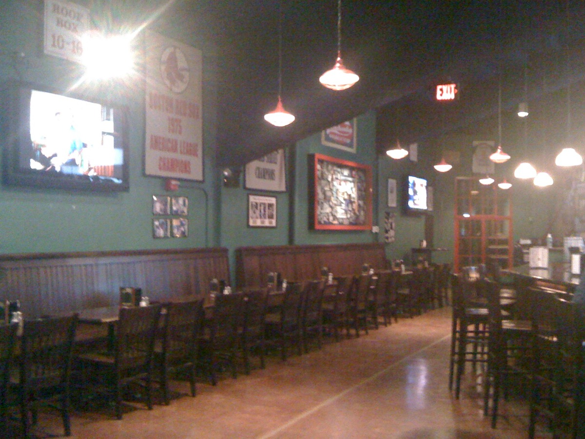
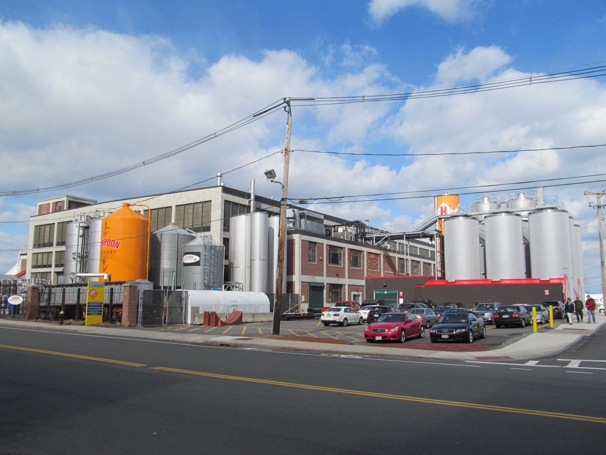
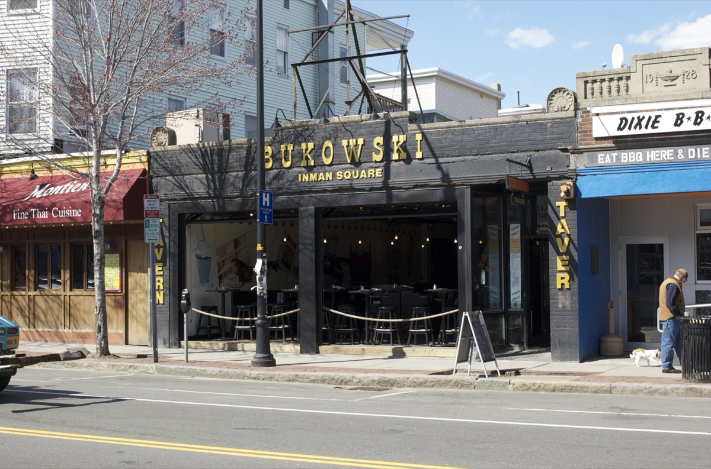
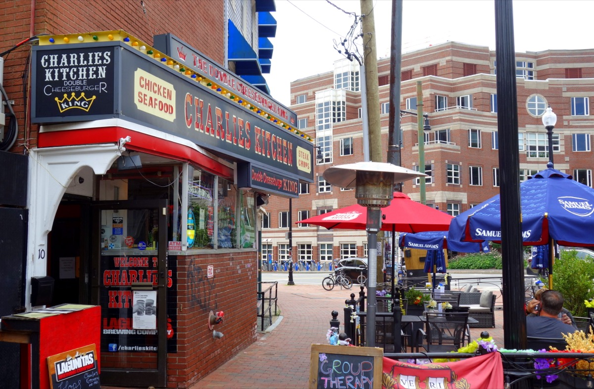

01
Trivia & sessions
The Burren
Irish pub with a session up front and trivia and bands in the back. Solo players join trivia teams all the time.
#2
Boston · Bar guide
Trivia nights, board game cafes, communal beer halls, neighborhood pubs and student bars, sorted by what makes each one easy to talk your way into. Addresses, T stops and the best night to go.


The short answer
Tap one to jump to it.
Boston bars get friendly once there is a reason to talk to a stranger: trivia, a board game, a run club, a shared table with no other seats left. Here are the bars that supply that reason, grouped by what kind of reason it is, plus how to actually use it once you're there.
All of these are on the T. Event nights change, so check a bar's calendar before you go, and weekends tend to arrive in pre-formed groups — Tuesday through Thursday is when the room is actually open to a stranger.
01 · Built-in format
Trivia, board games, bowling and shuffleboard: a reason to talk to the next table that doesn't require you to invent one.
Irish pub with a session up front and trivia and bands in the back. Solo players join trivia teams all the time.
Worker-owned brewery with a long communal room and a calendar of trivia, storytelling and book clubs.
Hundreds of board games, staff who teach, and open game nights that match solo players into groups.
Bowling, pool, shuffleboard and darts across several floors, so you share lanes with strangers.

Built into Fenway Park with a window onto the outfield. On game day everyone yells at the same umpire.
The Red Sox bar since 1969.
A lot of these format nights — trivia, sessions, open game nights — cost nothing to walk into. See more of what's free around the city in our guide to free things to do in Boston.
02 · Communal & beer halls
Long shared tables, no small ones. You end up next to someone whether you meant to or not.

The most social room in Boston: long communal tables, no small ones, soft pretzels with beer cheese.
The summer Greenway beer garden is the social version: picnic tables, food trucks, after-work crowd from 5pm.
Big hall with long tables, pizza and a river patio a block from the Garden. The stop before Bruins and Celtics games.
Food hall with one long central bar and hundreds of first-come stools at shared tables.
Harpoon and Trillium are both an easy walk from the water. Read up on the neighborhood in our Seaport guide.
03 · Neighborhood bars
Small rooms, a dozen stools, no way to sit through one without joining the conversation.
Tiny corner bar with Elvis memorabilia and a dozen stools. You cannot be in the room without joining the conversation.
Allston dive with cheap beer, free popcorn and darts. Ask to play next.

Narrow bar with a hundred-bottle beer list and a wheel you spin for a random beer. Commenting on someone's drink is normal.
Small Irish pub with the best Guinness around and welcoming regulars.
Cash-only Irish pub, no kitchen (bring food in), dogs welcome, jazz and session nights.
A small, cash-friendly neighborhood pub is also a very good plan when the weather turns. More ideas in our rainy day guide.
04 · Student bars
Loud, cheap and full of grad students who don't mind you talking to the next table.

Diner downstairs, loud cheap bar upstairs, and a beer garden full of grad students. Talking to the next table is normal.
Soccer bar on weekend mornings, DJ dance floor after 10pm.
More options
Grendel's Den (basement bar, patio), the Hong Kong (scorpion bowls) and Felipe's roof deck are all lively until 1am. More in the Harvard Square guide.
A night in Harvard Square doubles easily as an actual date. A few more ideas in our Boston date ideas guide.
05 · Run clubs & meetups
You don't have to run to make this work — the bar afterward is the actual point.
Converted-garage brewery with Cambridge's most popular run club: a few miles along the Charles, then beer.
Big taproom with rooftop greenhouse, barbecue, trivia and a busy run club.
More options
Language exchanges, board game nights, drag bingo, comedy open mics. See how to make friends in Boston and new to Boston.
Chaining a few of these into one afternoon starts to feel like an actual scavenger hunt. Our Boston city game turns that into a real challenge.
06
Going alone is easier once you've done it once. More on that in our guide to what's on this weekend.
07
Every bar on this page, side by side.
| Bar | Neighborhood | Nearest T | Format | Best night |
|---|---|---|---|---|
| The Burren | Davis Square | Davis | Trivia, sessions, shows | Weeknights |
| Democracy Brewing | Downtown Crossing | Downtown Crossing | Trivia, events | Midweek |
| Knight Moves | Brookline | Coolidge Corner | Board games | Open game nights |
| Lucky Strike Fenway | Fenway | Kenmore | Bowling, shuffleboard, pool | Non-game weeknights |
| Bleacher Bar | Fenway | Kenmore | Sports bar inside Fenway | Red Sox home games |
| Cask 'n Flagon | Fenway | Kenmore | Sports bar | Pre-game |
| Harpoon Beer Hall | Seaport | Harbor St (SL2) | Communal tables | Weekend afternoons |
| Trillium Fort Point / Greenway | Fort Point | South Station | Beer garden | Summer, after 5pm |
| Night Shift, Lovejoy Wharf | West End | North Station | Waterfront taproom | Before Garden games |
| Time Out Market | Fenway | Fenway | Food hall, shared seating | Friday and Saturday |
| Delux Café | South End | Back Bay | Tiny neighborhood bar | Any weeknight |
| Silhouette Lounge | Allston | Harvard Ave (B) | Dive, darts | Thursday to Saturday |
| Bukowski Tavern | Back Bay / Inman Square | Hynes / Central | Beer bar | Weeknights |
| The Druid | Inman Square | Central, then walk | Irish pub, sessions | Sunday afternoon, Wednesday |
| Brendan Behan Pub | Jamaica Plain | Jackson Square | Cash-only pub, dogs | Any weeknight |
| Charlie's Kitchen | Harvard Square | Harvard | Beer garden, diner bar | Summer evenings |
| Phoenix Landing | Central Square | Central | Soccer mornings, DJ nights | Weekend mornings |
| Lamplighter Brewing | Cambridge | Kendall or Central | Run club, taproom | Run club night |
| Dorchester Brewing | Dorchester | Andrew | Run club, trivia, events | Run club night |
| Castle Island Brewing | South Boston | Andrew | Run club, taproom | Run club night |
Event nights change; confirm first. More in Boston at night.
FAQ
no bad days club